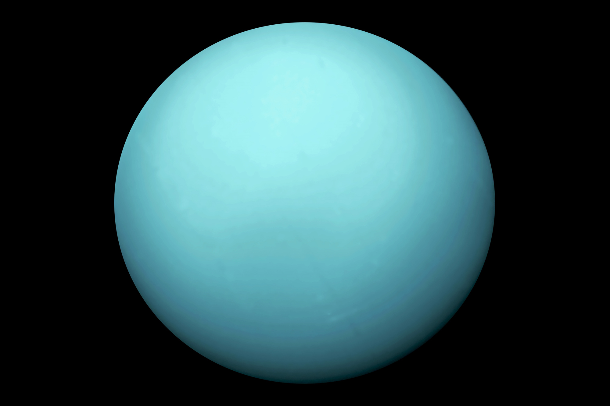

Uranus est la septième planète du Système solaire par ordre d'éloignement du Soleil. Elle orbite autour de celui-ci à une distance d'environ 19,2 unités astronomiques (2,87 milliards de kilomètres), avec une période de révolution de 84,05 années terrestres. Il s'agit de la quatrième planète la plus massive du Système solaire et de la troisième plus grande par la taille.
Elle est la première planète découverte à l’époque moderne avec un télescope et non connue depuis l'Antiquité. Bien qu'elle soit visible à l’œil nu, son caractère planétaire n'est alors pas identifié en raison de son très faible éclat et de son déplacement apparent dans le ciel très lent. William Herschel l'observe pour la première fois le 13 mars 1781 et la confirmation qu'il s'agit d'une planète et non d'une comète est faite pendant les mois qui suivent.
Comme Jupiter et Saturne, l'atmosphère d'Uranus est composée principalement d'hydrogène et d'hélium avec des traces d'hydrocarbures. Cependant, comme Neptune, elle contient une proportion plus élevée de « glaces » au sens physique, c'est-à-dire de substances volatiles telles que l'eau, l'ammoniac et le méthane, tandis que l'intérieur de la planète est principalement composé de glaces et de roches, d'où leur nom de « géantes de glaces ». Par ailleurs, le méthane est le principal responsable de la teinte aigue-marine de la planète. Son atmosphère planétaire est la plus froide du Système solaire, avec une température minimale de 49 K (−224 °C) à la tropopause, et présente une structure nuageuse en couches.
Pour plus d'information, cliquez ici